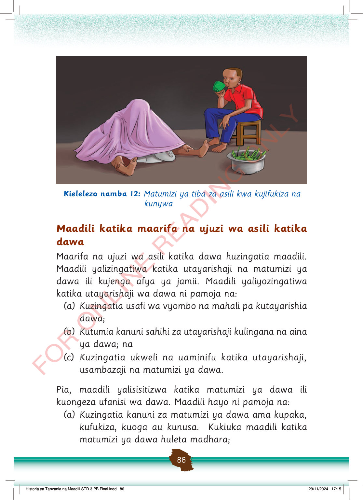

Mtu anajifukiza chini ya shuka, na mtoto anakunywa dawa ya asili akiwa amekaa kwenye kigoda. Pembeni kuna bakuli lenye majani ya dawa.
Kielelezo namba 12: Matumizi ya tiba za asili kwa kujifukiza na kunywa
Maadili katika maarifa na ujuzi wa asili katika dawa
Maarifa na ujuzi wa asili katika dawa huzingatia maadili.
Maadili yalizingatiwa katika utayarishaji na matumizi ya dawa ili kujenga afya ya jamii.
Maadili yaliyozingatiwa katika utayarishaji wa dawa ni pamoja na:
(a)
Kuzingatia usafi wa vyombo na mahali pa kutayarishia dawa;
(b)
Kutumia kanuni sahihi za utayarishaji kulingana na aina ya dawa; na
(c)
Kuzingatia ukweli na uaminifu katika utayarishaji, usambazaji na matumizi ya dawa.
Pia, maadili yalisisitizwa katika matumizi ya dawa ili kuongeza ufanisi wa dawa.
Maadili hayo ni pamoja na:
(a)
Kuzingatia kanuni za matumizi ya dawa ama kupaka, kufukiza, kuoga au kunusa.
Kukiuka maadili katika matumizi ya dawa huleta madhara;
Historia ya Tanzania na Maadili STD 3 PB Final.indd 86
29/11/2024 17:15